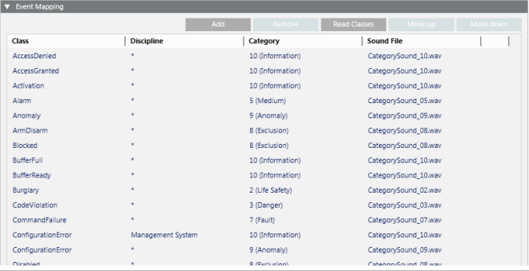

Event Mapping of a Schema
In Engineering mode, when you select an event schema, the Event Schema tab provides an Event Mapping expander which sets how different types of alarms are mapped to the categories defined in the Category Mapping expander (see above).

Each row in the expander defines a mapping as follows:
- Class: The alarm class. Selected from a drop-down list containing the alarm classes defined in the Classes block of the Headquarter Events library. The wildcard (*) means any class.
The available alarm classes are those defined by Headquarter in the Classes library block of the Headquarter Events library. Click Read Class to refresh this list with all the available alarm classes. - Discipline: The alarm discipline. Selected from a drop-down list containing the disciplines defined by Headquarter for the corresponding text group. The wildcard (*) means any discipline. The available disciplines are those defined by Headquarter for the corresponding text group.
- Category: The category assigned to alarms that match the class and discipline criteria specified in this row. Selected from a drop-down list containing the categories defined in the Category Mapping expander (see above). The available event categories are those defined in the Category Mapping expander.
- Sound File: The alarm sound assigned to alarms that match the class and discipline criteria specified in this row. Selected from a drop-down list containing the sound files configured in the L1-Headquarter Media Library block, while additional sound files are available only if configured for a customized Media Library. See Configuring Sounds and Media in a Library.

Events that do not match the criteria defined in any of these rows will be assigned to the Default category set in the Category Mapping expander.
If you create a row with wildcards (*) in both the Class and Discipline columns, this should always be the last row, because all entries under it will be ignored.
For instructions, see Define the Category and Event Mapping of a Schema.
The event mapping of an event schema under L1-Headquarter > Global > Events is a basic configuration provided by Headquarter and can be modified by Headquarter experts and Technical Support only.
Depending on their allowed customization level, authorized experts can modify the event mapping for event schemas defined at L2-Region, L3-Country, or L4-Project level.